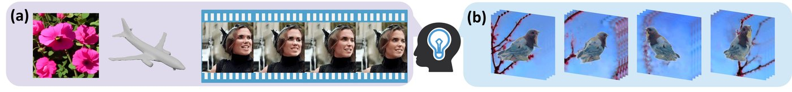
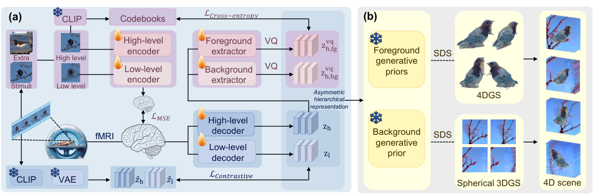

Anonymous supplementary page for a manuscript under review at TMLR
Author identities, affiliations, and repository names are omitted.

fMRI is recorded while a subject watches a 2D video. A subject-specific decoder maps that signal to a CLIP embedding and a Stable-Diffusion VAE latent, split into foreground and background by a vector-quantized codebook. Frozen image, video, and 3D priors then optimize a deformable 3D Gaussian foreground and a spherical 3D Gaussian background. The two are composited and rendered along a known camera orbit.
The decoded representation supplies semantic and coarse spatiotemporal anchors. Unobserved views, geometry, and high-frequency motion are completed by the priors. There is no unobserved-view ground truth, so the orbits below are prior-guided completions rather than metric reconstructions. Front-view SSIM is the only view-aligned reconstruction score.

Two orbits from the original qualitative runs. The top100 cohort, 100 clips, is the archive in Downloads.
cameras.json uses the same clip ids.
These three files are the same 100 clips. Front-view scoring uses azimuth 90. The camera trajectory is shared across clips.
| File | Contents |
|---|---|
| all_4d_orbits.tar | Top100 cohort: 100 orbit renders, one file per clip, named {clip_id}.gif. |
| cameras.json | Analytic 96-frame orbit for those same 100 clip ids. |
| top100_clip_ids.txt | The 100 clip ids. They match the archive filenames and the keys in cameras.json. |
NaN policy. A blank or nan cell means the metric is undefined for that clip, typically an
empty foreground mask or no valid foreground depth. These cells are never filled with zero, so the effective
n differs across metrics.
This page contains no author, affiliation, funding, or repository identifiers, and is excluded from search indexing.